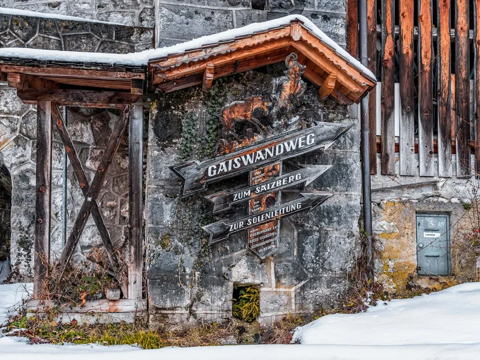
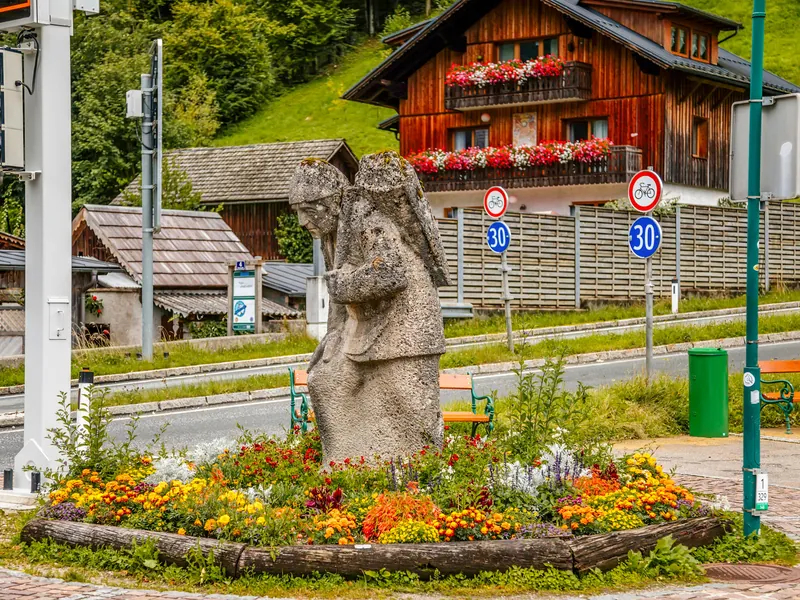

Przewodnik po Hallstatt → Wszystkie przewodniki
Kopalnia soli w Hallstatt: co naprawdę dostajesz za 49 €, po przebudowie z 2026 roku
Dwie rzeczy do ustalenia na samym początku. 49 €, które wszędzie się podaje, to bilet łączony — zwiedzanie kopalni plus kolejka w górę i w dół. Samo zwiedzanie kopalni kosztuje 33 €. A kopalnia otwarła się ponownie 29 sierpnia 2026, po roku prac, więc większość tego, co o niej przeczytasz w sieci, opisuje kolejkę, która już nie istnieje.
Nasz wniosek od razu: tak, z jednym zastrzeżeniem. Jeśli masz trzy wolne godziny i epoka brązu cokolwiek cię interesuje, to naszym zdaniem najlepsza płatna rzecz w miasteczku. Jeśli masz w Hallstatt cztery godziny w sumie, kopalnia zje ci cały dzień i zobaczysz wnętrze góry zamiast miejsca, po które przyjechałeś.
Jedna szczera uwaga o tym, co sami sprzedajemy, bo stoi obok tej decyzji. Nasz spacer z audioprzewodnikiem na siedemnaście przystanków obejmuje miasteczko — przystań, uliczki, cmentarz przy kościele, punkt widokowy — i nie wchodzi do kopalni. Kopalnia ma własnego przewodnika, wliczonego w bilet. Te dwie rzeczy raczej się dopełniają, niż konkurują: kopalnia to blok trzech godzin, spacer około dziewięćdziesięciu minut, a razem dają pełny i dobrze ułożony dzień. Jeśli masz czas tylko na jedno, a chcesz zrozumieć to miejsce, a nie odhaczyć je, zacznij od miasteczka.

Co dostajesz za 49 € i kto nie powinien tego kupować
Drabinka cen z własnej strony Salzwelten. Bilet łączony to €49 dla osoby dorosłej i €23 dla dziecka w wieku od 4 do 15 lat. Zwiedzanie kopalni bez kolejki to €33 i €16. Sama kolejka, dla tych, którzy chcą Skywalk i widok, ale nie wnętrze góry, to €29 i €14. Grupy od dwudziestu osób płacą €47 od głowy. Nie ma biletu rodzinnego ani zniżki online: operator podaje, że ulgi przysługują wyłącznie na miejscu, przy kasie.
Cztery rodzaje odwiedzających powinny się dwa razy zastanowić, i wolimy powiedzieć to teraz niż na końcu.
Każdy, kto przyjeżdża na krótką wycieczkę jednodniową. Trzy godziny to uczciwa liczba dla samej kopalni, a miasteczko Hallstatt to spacer na dziewięćdziesiąt minut w najwolniejszym tempie. Jeśli autokar albo pociąg daje ci tu cztery czy pięć godzin, wybierasz między nimi, a nie mieścisz obu.
Każdy, kto bierze też kolejki na Dachstein. Oba to półdniowe górskie zobowiązania po przeciwnych stronach jeziora. Potraktowanie ich jako dwóch dni to różnica między zobaczeniem ich a przetrwaniem.
Każdy z klaustrofobią. Przekazujemy to tak, jak formułuje to operator, bez łagodzenia: Salzwelten „stanowczo odradza zwiedzanie kopalni soli”, jeśli ją masz. Operator odradzający własny produkt to rzadkość na tyle, by wziąć to poważnie.
Osoby na wózkach. Nowa kolejka i bistro na górze są bez stopni i tak właśnie je się reklamuje; kopalnia nie. Operator mówi wprost, że warunki w środku czynią zwiedzanie na wózku niemożliwym. Kiedy czytasz o tej atrakcji „bez barier”, chodzi o dojazd na górę.
Co jest w cenie: kolejka, zwiedzanie, zjeżdżalnia, schody
Dziewięćdziesiąt minut pod ziemią, około dwóch kilometrów chodzenia, a z góry wyjeżdża się kolejką kopalnianą. W środku: zjeżdżalnia górników, którą operator podaje jako 64-metrową i która jest opcjonalna — obok biegną schody z poręczą, co warto wiedzieć, jeśli po cichu się jej bałeś. Podziemne jezioro solne. Zrekonstruowany grób i odcinek nazwany Ścieżką przez czas. Oraz Kino Epoki Brązu, które jest prawdziwym powodem, by tu przyjechać, i ma niżej własną sekcję.
Praktyczne szczegóły, które operator publikuje, a większość tekstów pomija. Temperatura w środku to około 8 °C przez cały rok, według liczby z FAQ operatora, więc ciepłe ubranie i porządne buty. Ochronne kombinezony są obowiązkowe — operator używa słowa Ausnahmslos, bez wyjątku — i dostaje się je na miejscu. Fotografowanie jest dozwolone. Dzieci wchodzą od 4. roku życia, to limit prawny z austriackiej ustawy górniczej, nie reguła firmy. Psy nie, choć są dla nich kojce. Małe torby można bezpłatnie zostawić w Knappenhaus; większe szafki kosztują 2 € za godzinę, co przy trzygodzinnej wizycie nie jest bez znaczenia.
Jak wygląda wizyta i ile naprawdę zajmuje
Zacznij od liczby, której prawie nikt nie drukuje, bo to ona sprawia, że ludzie się spóźniają: Salzwelten prosi, żeby być na dolnej stacji 45 minut przed rozpoczęciem swojej tury. Nie przy kopalni, a u podnóża kolejki. Wszystko inne z tego wynika.
Jak ułożona jest wizyta
- Dolna stacja
- Kolejka, 2,6 min
- Przejście przez wysoką dolinę, ~15 min
- Zwiedzanie z przewodnikiem, ~90 min
- Kolejką kopalnianą na zewnątrz, kolejką w dół
Etapy, nie proporcje. Podawane przez operatora czasy są mierzone na całej tej sekwencji, od dolnej stacji i z powrotem do niej.
Teraz czas trwania — i tu operator sam sobie przeczy w sposób wart rozplątania, bo pomyłka w drugą stronę jest równie łatwa. FAQ Salzwelten mówi, że trzeba zaplanować co najmniej dwie i pół godziny, i wylicza, co to obejmuje: kolejkę w górę i w dół plus krótkie przejście przez wysoką dolinę Hallstatt do budynku wejściowego. Strona Salzwelten Entdecken & Erleben („Odkrywaj i przeżywaj”) mówi o co najmniej trzech godzinach — „na całą wizytę” — i wyznacza miejsce zbiórki na dolnej stacji.
Czyli obie liczby są już pełne, mierzone od dolnej stacji do dolnej stacji. Dodawanie do nich przejścia dojściowego, co robi spora część tekstów podróżniczych, liczy je dwa razy. Czego operator nie robi, to uzgodnienia swoich dwóch liczb, a skoro żadna z tych stron nie jest wiarygodniejsza od drugiej, rozsądną liczbą do planowania jest większa: trzy godziny od przyjścia na kolejkę do zjazdu z góry.
Samo przejście to podane przez operatora piętnaście minut, w górę, od Skywalku na szczycie windy panoramicznej do Knappenhaus, gdzie zbiera się grupa. Nie jest wyczerpujące i nie jest opcjonalne.
Jedyna rzecz naprawdę doliczana do tych trzech godzin to parkowanie, bo dzieje się przed dotarciem na dolną stację. Salzwelten pisze wprost, że nie ma własnego parkingu dla odwiedzających, i radzi założyć co najmniej godzinę na znalezienie miejsca w miasteczku. To liczba operatora, nie nasza, a w sierpniu nie jest pesymistyczna.
Rezerwacja kopalni
49 € czy 33 € — i ścieżka, która jest zamknięta
Różnica 16 € między dwoma biletami to kolejka, a tańsza taryfa istnieje dla konkretnej osoby: kogoś, kto wchodzi na solną górę pieszo, zamiast jechać. W tym sezonie ta osoba nie może zrobić tego, do czego bilet służy.
Bezpośrednia droga w górę, Serpentinenweg, jest zamknięta z powodu budowy do wiosny 2027. Alternatywa, okrężna przez Echerntal, zajmuje od dziewięćdziesięciu minut do dwóch godzin w jedną stronę — a potem masz jeszcze piętnastominutowe dojście i dziewięćdziesięciominutowe zwiedzanie, i wciąż musisz zejść. Salzwelten sprzedaje bilet za 33 €, nie wspominając o niczym z tego; zamknięcie ogłasza biuro turystyczne Hallstatt, a obie organizacje nie odwołują się do siebie. Jeśli kupisz tej jesieni taryfę dla piechurów, by zaoszczędzić 16 €, kosztuje cię to na razie pół dnia.
Warto wiedzieć, zanim wzdrygniesz się przy 49 €: Salzwelten prowadzi trzy kopalnie i ta jest droga. Altaussee to 27 €. Salzburg, w Bad Dürrnberg, to 35 € i ciągnie raczej w stronę Celtów niż prehistorii. Nie ma biletu łączonego na wszystkie trzy — sprawdziliśmy każdą z trzech stron z cenami. Skoro samo zwiedzanie w Hallstatt za 33 € mieści się zgrabnie między dwoma pozostałymi, dopłata, którą wnosisz, to w istocie kolejka.
Co jest tu naprawdę wyjątkowe

Schody, po których ktoś wszedł w 1343 roku p.n.e.
Wyobraź sobie człowieka wychodzącego z ciemności z ładunkiem soli na plecach, po drewnianych stopniach na tyle szerokich, że schodzący może go minąć i żaden z nich nie musi się zatrzymać. To się działo tutaj, w tej górze, w XIV wieku p.n.e. Schody, z których korzystał, wciąż stoją, czterysta metrów w głębi skały, i mija się je na standardowym zwiedzaniu.
Przetrwały jego, Cesarstwo Rzymskie, średniowiecze i wynalezienie urządzenia, na którym to czytasz, bo sól nie pozwala drewnu gnić. To najstarsze zachowane drewniane schody w Europie i to one są powodem, by kupić bilet. Zjeżdżalnie są fajne, a nowa kolejka bardzo dobra, ale nie po nie się tu przyjeżdża.
Teraz dowody, które są wyjątkowo dobre. Belki ścięto w 1344 i 1343 roku p.n.e., a schody zbudowano w 1343 — datowane co do roku na podstawie słojów, co stało się możliwe dopiero wtedy, gdy austriaccy badacze przez lata składali krzywą referencyjną ze świerków i modrzewi rosnących na 900 do 1600 metrów, bo drewno z tej wysokości nie zgadza się z krzywymi nizinnymi. Mają osiem metrów długości, stopnie szerokości 1,20 metra, i zaprojektowano je tak, by dawały się rozłożyć: budowniczowie z epoki brązu zrobili je modułowo, żeby zepsutą część można było wymienić.
Jak kompletne są? Muzeum Historii Naturalnej w Wiedniu, które prowadzi wykopaliska, pisze, że schody przetrwały nahezu unversehrt — niemal nieuszkodzone — a my zostawilibyśmy to „niemal”. Do czasu wydobycia ciśnienie skał od lat przesuwało i podnosiło konstrukcję, i właśnie dlatego trzeba ją było przenieść. Własne dokumenty muzeum podają liczbę pojedynczych elementów jako ponad siedemdziesiąt w jednym komunikacie i sześćdziesiąt w innym; nikt tego nie uzgodnił.
To, co widzisz, to oryginalne drewno, ale nie całkiem tam, gdzie je znaleziono. Schody odsłonięto w całości w 2012, żeby góra ich nie zmiażdżyła, od 2013 rozbierano je od dołu, skanowano laserowo element po elemencie, osuszono według specjalnie opracowanej procedury na Uniwersytecie Zasobów Naturalnych w Wiedniu i poddano tomografii komputerowej w austriackim instytucie badawczym odlewnictwa. Zimą 2014–15 wysadzono w stabilnej skale nową komorę, wiosną schody postawiono w niej ponownie, osadzono w drobno zmielonej soli kamiennej, a 25 kwietnia 2015 otwarto Kino Epoki Brązu. Stoją teraz za szczelną dyfuzyjnie przezroczystą folią, z sześcioma czujnikami pilnującymi klimatu wokół nich, i z animacją 4K o pracy w epoce brązu wyświetlaną na samym znalezisku. Żadnej części nie zastąpiono nowym drewnem.
Dwie ostrożności, jeśli zaczniesz czytać dalej. Część stron dla odwiedzających wciąż twierdzi, że schody są in situ, tam gdzie je znaleziono; nie są od ponad dekady. A Muzeum Historii Naturalnej podaje na jednej ze swoich angielskich stron 1108 p.n.e. — liczbę, której przeczą jego własne materiały prasowe, jego własna strona o analizie drewna i laboratorium dendrochronologiczne, które wykonało tę pracę, a wszystkie podają 1344 i 1343. Konkurencja kopiuje tę błędną.
Co jedli górnicy
Mieli ser pleśniowy i piwo. Trzy tysiące lat temu, pod ziemią, w austriackich Alpach.
Wiemy to dzięki drugiej rzeczy, którą sól konserwuje. Badacze przeanalizowali ludzkie paleofekalia wydobyte z kopalni, od epoki brązu do XVIII wieku, i opublikowali wyniki w Current Biology w 2021. Jedna próbka z epoki żelaza zawierała Penicillium roqueforti i Saccharomyces cerevisiae w ilościach i konfiguracjach genetycznych wskazujących na celową fermentację — pierwszy molekularny dowód na ser pleśniowy i piwo w Europie epoki żelaza. Reszta diety opierała się na otrębach zbożowych i bobie, a flora jelitowa górników, aż po barok, przypominała tę u współczesnych populacji niezachodnich.
To efekt Hallstattu w jednym odkryciu. Sól jest higroskopijna i przeciwbakteryjna, a zawalone chodniki z epoki brązu uszczelniły wszystko w swoim wnętrzu — dlatego to stanowisko daje drewno, skórę, tkaninę, linę i obiad tam, gdzie inne dają tylko metal i ceramikę.
Ile to naprawdę ma lat — i martwy punkt, który to miejsce stworzyło
Wszędzie zobaczysz „7000 lat”, także na naszych stronach, i wymaga to zastrzeżenia. Siedem tysięcy lat dotyczy produkcji soli w tym miejscu i opiera się na kilofie z rogu, znalezionym w 1838 i datowanym radiowęglowo na około 5000 p.n.e. Muzeum Historii Naturalnej, które go przechowuje, jest ostrożne: kilof „może wskazywać na górnictwo podziemne”, ale „równie dobrze mógł służyć do odkrycia źródła solankowego”.
Górnictwo podziemne to historia krótsza i lepiej udokumentowana, a źródła wciąż się nie zgadzają. Muzeum datuje najstarsze bezpośrednie dowody na XV wiek p.n.e. i mówi, że to prawdopodobnie nie początek; dendrochronolodzy stawiają pierwsze belki na 1458 p.n.e.; recenzowana synteza zobowiązuje się tylko do XIV wieku p.n.e. Jednej daty początkowej nie ma, a kto ci ją podaje, ten zaokrągla.
Koniec tej pierwszej fazy jest wyraźniejszy. Najmłodszy kawałek drewna w całej kopalni z epoki brązu datuje się na 1245 p.n.e., a muzeum łączy zawalenie się wyrobisk ze spływem gruzowym — osuwiskiem nasączonej wodą skały, nie suchym obrywem — mniej więcej w tym czasie. Górnictwo wraca w IX wieku p.n.e., w innej części góry, po przerwie około czterystu lat.
A potem to miejsce stworzyło problem nauce, która nazwała się od niego. Datowanie radiowęglowe ma płaski odcinek między około 750 a 400 p.n.e., gdzie krzywa kalibracyjna nie potrafi odróżnić jednej daty od drugiej. Ponieważ obejmuje dokładnie okres definiowany przez ten cmentarz, w literaturze nosi nazwę plateau Hallstattu. Miasteczko nazwało epokę archeologiczną, a potem nazwało martwy punkt, który sprawia, że tę epokę trudno datować.
Nic z tego nie jest zamknięte. We wrześniu 2026 muzeum ogłosiło nieznany wcześniej kompleks z epoki żelaza, znaleziony wierceniem rdzeniowym: równoległe komory ułożone jedna nad drugą, biegnące na co najmniej 300 metrów, każda około 25 metrów szeroka i 20 metrów wysoka. To ogłoszenie prasowe, a nie opublikowana praca, więc traktuj je jako nowinę, nie ustalenie — ale to właśnie dlatego góra wciąż interesuje ludzi, którzy nie są turystami.
Gdzie naprawdę są słynne znaleziska
Archeologia Hallstattu jest rozdzielona na trzy miejsca, a wiedza o tym, który bilet co pokazuje, oszczędza zmarnowane popołudnie.
| Co | Gdzie to zobaczysz | Bilet |
| Schody z epoki brązu, 1343 p.n.e. — oryginalne drewno | Pod ziemią, na standardowym zwiedzaniu | Kopalnia, €49 lub €33 |
| Chodniki, jezioro solne, 64-metrowa zjeżdżalnia | Pod ziemią | Kopalnia, €49 lub €33 |
| Oryginalne znaleziska z hallstackiego cmentarzyska i historia tego, jak to miejsce działało | Muzeum Światowego Dziedzictwa, w miasteczku | €12 |
| Największa i najsłynniejsza część materiału z cmentarzyska — miecze, kość słoniowa i szkło, które dały nazwę epoce | Muzeum Historii Naturalnej, Wiedeń | Nie w Hallstatt |
| Skarb złota z Arikogel | Wiedeń, w gabinecie złota muzeum | Nie w Hallstatt |
| Człowiek w soli | Nigdzie — pochowany ponownie w 1734 | — |
Sprostowanie, które winni jesteśmy muzeum w miasteczku, bo to punkt, który większość przewodników przekręca. Muzeum Światowego Dziedzictwa to nie sala replik i ekranów: regionalne biuro turystyczne opisuje je jako mieszczące „liczne oryginalne znaleziska z hallstackich cmentarzysk”, ułożone w dwadzieścia sześć tematycznych sekcji, od neolitu do pojawienia się turystyki, z multimedialną inscenizacją dodaną do obiektów, a nie zamiast nich. Prawdą jest, że największa i najlepiej znana część materiału wykopanego przez Johanna Georga Ramsauera w XIX wieku jest w Wiedniu, cztery godziny drogi stąd. Oba te zdania są prawdziwe naraz, a konkurent, który mówi ci, że w muzeum w miasteczku nie ma nic prawdziwego, w nim nie był.
Jeszcze jeden powód, by wpisać je w tym roku na listę: wystawa czasowa o niedawnych wykopaliskach Riezingera trwa tam od kwietnia 2026 do grudnia 2027.
Co do złota — czternaście sztuk, 506 gramów, znalezionych na Arikogel nad jeziorem — oryginał jest w gabinecie złota Muzeum Historii Naturalnej w Wiedniu od 2015. Raz wrócił do domu: muzeum wypożyczyło oryginały z powrotem do miasteczka na jedno lato 2015, kiedy jego własne sale prehistorii przechodziły remont. Nie znaleźliśmy żadnego opublikowanego stwierdzenia w jedną ani w drugą stronę, czy kopia jest teraz wystawiona w Hallstatt, więc nie szukaj jej na nasze słowo.
Miasteczko, przed górą albo po niej
Siedemnaście przystanków od przystani promowej do punktu widokowego Światowego Dziedzictwa, około dziewięćdziesięciu minut, mapa i audio offline. Nie wchodzi do kopalni — tamto zwiedzanie ma własnego przewodnika — ale to on zamienia godziny po obu stronach w coś więcej niż czekanie.
Planowanie dnia i jak nie przegapić ostatniej tury
Godzina zamknięcia to nie godzina przyjścia. „9:30–16:30” znaczy, że ostatnia tura zaczyna się o 16:30, a najpóźniejszy wjazd kolejką jest pół godziny wcześniej. Od 2 listopada ostatnia tura zaczyna się o 15:00. W listopadzie celowanie we „wczesne popołudnie” oznacza, że kopalni nie zobaczysz wcale.
Nie planuj ostatniego okienka bez potwierdzenia. Operator i turystyczna strona miasteczka publikują różne rozkłady zimowe: Salzwelten podaje sezon od 2 listopada i ostatni zjazd kolejką o 16:30, strona turystyczna podaje 25 października i 16:00. Nie polegalibyśmy na żadnej z nich przy ostatniej turze dnia — zarezerwuj okienko albo zadzwoń do operatora, zamiast przyjeżdżać i negocjować z obsługą.
Nie ma parkingu dla odwiedzających. Salzwelten nie ma własnego i radzi założyć co najmniej godzinę. P2 jest minutę od dolnej stacji, ale gmina podaje go jako letni, więc od listopada najbliższy pewny parking to P1, jakieś siedem minut spacerem. P3 i P4 są o trzydzieści.
Zamknięte 24 i 31 grudnia — dwie daty, które gość świąteczny wybiera nadzwyczaj chętnie. Sam jarmark trwa jeden dzień, 8 grudnia, i tego dnia kopalnia jest otwarta.
Zimowy kształt miasteczka jest przeciwieństwem tego, co piszą blogi. Kopalnia i kolejka działają w skróconych godzinach do 6 stycznia, a potem się zatrzymują, i na 2027 nie opublikowano niczego. To, co zostaje otwarte przez resztę zimy, jest w miasteczku: Muzeum Światowego Dziedzictwa codziennie, kostnica od środy do niedzieli od listopada do marca za 2 €, i darmowe wykopaliska archeologiczne pod sklepem sportowym na Seestrasse, otwarte cały rok. Wizyta w styczniu nie jest więc pusta — po prostu nie jest wizytą w kopalni.
Działają dwa układy dnia. Przyjedź wcześnie, zrób najpierw kopalnię, a miasteczko zostaw na popołudnie i wieczór, kiedy autokary jednodniowe już odjadą. Albo przejdź miasteczko w ciszy poranka i weź turę po południu, pamiętając o ostatniej o 15:00 po 2 listopada. To, w którym miesiącu przyjedziesz, zmienia tu więcej niż cokolwiek innego, a nasz przewodnik miesiąc po miesiącu ma cały kalendarz; nasz kompletny przewodnik po Hallstatt układa resztę dnia, a jak tu w ogóle dotrzeć, piszemy dla Salzburga i Wiednia.
Co zmieniła przebudowa z 2026 roku
Salzwelten zamknęło kolejkę we wrześniu 2025 i otwarło ją ponownie 29 sierpnia 2026. Własny komunikat operatora podaje prace na 362 dni, a inwestycję na około 34 mln € — warto powiedzieć, skąd ta liczba, bo krąży bez źródła: jest w ogłoszeniu samego Salzwelten, nie w szacunku dziennikarza.
Trzy rzeczy zmieniły się tak, że odwiedzający to zauważa. Starą linię rozebrano i zbudowano całkiem nową na tym samym przebiegu, więc nic, co przeczytasz z czasów przed jesienią 2026, nie opisuje przejazdu, który dostaniesz. Wjazd zajmuje teraz niecałe trzy minuty w szklanych kabinach, które same utrzymują poziom na stoku. A wsiadanie jest bez stopni, z bistro i tarasem na górze oraz dużym sklepem na dole.
To, co się nie zmieniło, waży tyle samo. Zwiedzanie pod ziemią to ten sam spacer przez tę samą górę, a kopalni nadal nie da się zwiedzić na wózku.
Co zbudowano za 34 mln €
593 metry torowiska, 325 metrów różnicy wysokości między dolną stacją na 515 m i górną na 840 m. Maksymalne nachylenie 87,72 %. 5,5 metra na sekundę, czas przejazdu 2,6 minuty, dwie kabiny po 60 osób, 1000 osób na godzinę. Technologia kolei linowej Garaventa, kabiny Carvatech pod Gmunden, architektura Hasenauer.Architekten. Na górze bistro Weitblick 7000, na dole sklep o powierzchni 300 m².
Najczęstsze pytania
Ile kosztuje kopalnia soli w Hallstatt?
€49 dla osoby dorosłej i €23 dla dziecka w wieku od 4 do 15 lat, z kolejką w górę i w dół. Samo zwiedzanie kopalni, dla wchodzących pieszo, to €33 i €16; sama kolejka €29 i €14. Grupy od dwudziestu osób płacą €47. Nie ma biletu rodzinnego ani zniżki online — operator podaje, że ulgi przysługują wyłącznie na miejscu, przy kasie.
Ile trwa zwiedzanie kopalni soli w Hallstatt?
Zwiedzanie z przewodnikiem pod ziemią to około dziewięćdziesięciu minut i mniej więcej dwa kilometry. Na całą wizytę strony operatora podają albo dwie i pół godziny, albo trzy, zależnie od tego, którą czytasz — a obie liczby mierzone są od dolnej stacji i z powrotem, już z kolejką i piętnastominutowym przejściem do wejścia, więc nie ma czego doliczać. Założ trzy godziny, a jeśli jedziesz samochodem, wcześniej do godziny na parkowanie.
Czy kopalnia soli w Hallstatt jest tego warta?
Jeśli masz trzy wolne godziny, uważamy, że tak: mieści najstarsze zachowane drewniane schody w Europie, datowane na 1343 p.n.e., a Salzwelten nazywa ją najstarszą kopalnią soli na świecie. Przy czterogodzinnej wycieczce jednodniowej pochłonie całą wizytę. Jeśli na liście są też kolejki na Dachstein, potraktuj je jako dwa różne dni.
Czy kopalnia soli w Hallstatt naprawdę jest najstarsza na świecie?
To twierdzenie operatora i jest rozsądne dla górnictwa solnego w Europie — ale to twierdzenie, nie ustalony fakt. Archeolodzy pracujący w Duzdagi w Azerbejdżanie datują wydobycie soli kamiennej na drugą połowę V tysiąclecia p.n.e., starsze niż cokolwiek udokumentowane w Hallstatt. Zauważ też, że Salzwelten przypisuje inny superlatyw własnej kopalni w Hallein, którą nazywa najstarszą kopalnią pokazową na świecie, bo odwiedzający zjeżdżają do niej od 1607. Twardy, sprawdzalny rekord, który trzyma Hallstatt, to schody.
Jak zimno jest w kopalni soli w Hallstatt?
Około 8 °C przez cały rok, według liczby operatora. Weź dodatkową warstwę i porządne buty; podłoże jest miejscami nierówne. Ochronne kombinezony są obowiązkowe i dostaje się je na miejscu.
Czy trzeba zjeżdżać zjeżdżalniami?
Nie. Obok zjeżdżalni górników, w tym tej 64-metrowej, biegną schody z poręczą i można wybrać je.
Czy można zwiedzić kopalnię soli w Hallstatt na wózku?
Nie. Nowa kolejka i bistro są bez stopni, ale operator podaje, że warunki w kopalni czynią zwiedzanie na wózku niemożliwym. Dzieci wpuszcza się od 4. roku życia, to limit z austriackiej ustawy górniczej.
Jakie godziny ma kopalnia soli w Hallstatt zimą?
Od 2 listopada 2026 do 6 stycznia 2027 ostatnia tura zaczyna się o 15:00, a kopalnia jest zamknięta 24 i 31 grudnia. Poza 6 stycznia 2027 nie opublikowano niczego — na dzień 22 października 2026 nigdzie nie ma wiosennej daty 2027, więc wizytę po Nowym Roku trzeba potwierdzić u operatora.
Spacer po Hallstatt — audioprzewodnik
- 17 nagrań, teksty napisane przez historyka, z poczuciem humoru
- Mapa offline z GPS — roaming niepotrzebny
- Start dowolnego dnia i o dowolnej porze, z przerwą na obiad
- Ilustracje, dzięki którym wiadomo, na co właściwie patrzeć
- Działa na iPhonie i Androidzie, w aplikacji TouringBee
Wstęp do kostnicy, kopalni soli i muzeum trzeba opłacić osobno.

Przejdź Hallstatt z audioprzewodnikiem — 9,99 €
Werdykt
Warte trzech godzin, głównie dla ośmiometrowych drewnianych schodów, które ktoś zbudował w 1343 p.n.e. i które wciąż stoją, bo sól nie pozwala rzeczom gnić. Samo zwiedzanie jest pod ziemią i odbywa się niezależnie od tego, co robi niebo; kolejka i kwadrans przejścia przez otwartą wysoką dolinę już nie, więc pogoda nadal kształtuje dzień, nawet kiedy go nie odwołuje. W chmurach kopalnia pokazuje to, co pokazuje zawsze, a miasteczko nie — i to argument o kolejności, w jakiej się rzeczy robi, nie obietnica, że góra jest zawsze otwarta.
Nie warte na krótkiej wycieczce jednodniowej, nie warte w tym samym dniu co Dachstein i — konkretnie w tym sezonie — nie warte oszczędzania 16 €, bo ścieżka, dla której ten tańszy bilet jest przeznaczony, jest zamknięta do wiosny.
Ceny, godziny otwarcia i sezony na tej stronie sprawdzono 22 października 2026 na własnych stronach i w komunikatach prasowych Salzwelten, w biurze turystycznym Hallstatt, Muzeum Światowego Dziedzictwa i Muzeum Historii Naturalnej w Wiedniu. Opublikowany rozkład operatora kończy się 6 stycznia 2027 i nie ma jeszcze żadnych dat sezonu 2027, więc potwierdź wszystko po tej dacie przed wyjazdem. Część linków to linki afiliacyjne: jeśli zarezerwujesz przez nie, możemy otrzymać niewielką prowizję bez dodatkowego kosztu dla ciebie. Nie wpływa to na nasze rekomendacje.